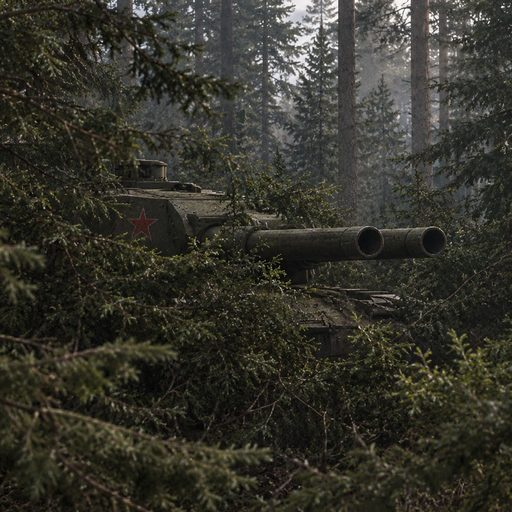

Allies vs Soviets
On: your music app keeps playing during the game. Game sounds then follow the phone's silent switch.
Sound: waiting for a tap
Code, art, music compositions and interface sounds are original.
Sound effects from OpenGameArt.org: gunshots and rocket launches by dklon, explosions by qubodup and Lamoot, Tesla coil by Varkalandar, death cries by Michel Baradari (all CC-BY 3.0); rifles, cannons, hits, fire and construction by Kurt, hingydunyas, rubberduck, thimras, themightyglider and Antum Deluge (CC0).
Music instruments: drums from MuldjordKit by Lars Muldjord (CC-BY 4.0, FreePats edition); distorted guitar from FreePats and picked bass by Andrea Biasior for FreePats (CC0); trumpet, French horn, trombone, cello and viola from VSCO 2 CE, and anvil, brake drum and timpani from VCSL, both by Versilian Studios (CC0).
Voices and gang shouts made with Kokoro (Apache-2.0). Fonts: Black Ops One by James Grieshaber and Eben Sorkin, VT323 by Peter Hull, Archivo Narrow by Omnibus-Type (SIL OFL 1.1).
Full list with links: CREDITS.md.